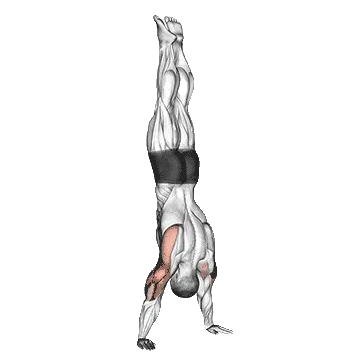

中级平均次数
一般中级训练者的参考值。
男性
12
女性
9
倒立俯卧撑平均次数
| 等级 | ||
|---|---|---|
| 初学者 | < 1 | < 1 |
| 初级者 | < 1 | < 1 |
| 中级者 | 12 | 9 |
| 进阶者 | 31 | 22 |
| 菁英 | 51 | 37 |
注：这些数值是单组可完成平均次数的估算。体重、动作幅度、节奏等个人因素都可能造成差异。详细数据请参考下方表格。
你的当前位置
查看倒立俯卧撑等级
将单组完成次数与体重标准比较。
判断结果
用 Shiba 记录倒立俯卧撑
估算结果仅供参考，动作姿势、活动范围和疲劳都会影响结果。 查看计算方式
倒立俯卧撑标准次数
男性按体重(kg)数据 [次数]
| 体重 | 初学者 | 初级者 | 中级者 | 进阶者 | 菁英 |
|---|---|---|---|---|---|
| 50 | < 1 | < 1 | 9 | 29 | 52 |
| 55 | < 1 | < 1 | 10 | 29 | 51 |
| 60 | < 1 | < 1 | 11 | 29 | 50 |
| 65 | < 1 | < 1 | 11 | 29 | 49 |
| 70 | < 1 | < 1 | 12 | 29 | 48 |
| 75 | < 1 | < 1 | 12 | 29 | 47 |
| 80 | < 1 | < 1 | 12 | 28 | 46 |
| 85 | < 1 | < 1 | 12 | 28 | 45 |
| 90 | < 1 | < 1 | 12 | 27 | 44 |
| 95 | < 1 | 1 | 12 | 27 | 43 |
| 100 | < 1 | 1 | 12 | 26 | 42 |
| 105 | < 1 | 1 | 12 | 26 | 41 |
| 110 | < 1 | 1 | 12 | 25 | 40 |
| 115 | < 1 | 1 | 12 | 25 | 39 |
| 120 | < 1 | 1 | 11 | 24 | 38 |
| 125 | < 1 | 1 | 11 | 24 | 37 |
| 130 | < 1 | 1 | 11 | 23 | 36 |
| 135 | < 1 | 1 | 11 | 22 | 35 |
| 140 | < 1 | 1 | 10 | 22 | 34 |
男性按年龄数据 [次数]
| 年龄 | 初学者 | 初级者 | 中级者 | 进阶者 | 菁英 |
|---|---|---|---|---|---|
| 15 | < 1 | < 1 | 7 | 22 | 39 |
| 20 | < 1 | < 1 | 11 | 29 | 49 |
| 25 | < 1 | < 1 | 12 | 31 | 51 |
| 30 | < 1 | < 1 | 12 | 31 | 51 |
| 35 | < 1 | < 1 | 12 | 31 | 51 |
| 40 | < 1 | < 1 | 12 | 31 | 51 |
| 45 | < 1 | < 1 | 10 | 27 | 47 |
| 50 | < 1 | < 1 | 8 | 24 | 42 |
| 55 | < 1 | < 1 | 6 | 20 | 37 |
| 60 | < 1 | < 1 | 3 | 16 | 31 |
| 65 | < 1 | < 1 | < 1 | 11 | 25 |
| 70 | < 1 | < 1 | < 1 | 8 | 20 |
| 75 | < 1 | < 1 | < 1 | 4 | 14 |
| 80 | < 1 | < 1 | < 1 | 1 | 10 |
| 85 | < 1 | < 1 | < 1 | < 1 | 7 |
| 90 | < 1 | < 1 | < 1 | < 1 | 4 |
女性按体重(kg)数据 [次数]
| 体重 | 初学者 | 初级者 | 中级者 | 进阶者 | 菁英 |
|---|---|---|---|---|---|
| 40 | < 1 | < 1 | 6 | 19 | 35 |
| 45 | < 1 | < 1 | 8 | 20 | 35 |
| 50 | < 1 | < 1 | 8 | 21 | 35 |
| 55 | < 1 | < 1 | 9 | 21 | 34 |
| 60 | < 1 | < 1 | 9 | 21 | 34 |
| 65 | < 1 | < 1 | 9 | 20 | 33 |
| 70 | < 1 | < 1 | 9 | 20 | 32 |
| 75 | < 1 | 1 | 9 | 20 | 31 |
| 80 | < 1 | 1 | 9 | 19 | 30 |
| 85 | < 1 | 1 | 9 | 19 | 29 |
| 90 | < 1 | 1 | 9 | 18 | 28 |
| 95 | < 1 | 1 | 9 | 18 | 28 |
| 100 | < 1 | 1 | 9 | 17 | 27 |
| 105 | < 1 | 1 | 9 | 17 | 26 |
| 110 | < 1 | 1 | 8 | 16 | 25 |
| 115 | < 1 | 1 | 8 | 16 | 24 |
| 120 | < 1 | < 1 | 8 | 15 | 23 |
女性按年龄数据 [次数]
| 年龄 | 初学者 | 初级者 | 中级者 | 进阶者 | 菁英 |
|---|---|---|---|---|---|
| 15 | < 1 | < 1 | 4 | 15 | 27 |
| 20 | < 1 | < 1 | 9 | 21 | 36 |
| 25 | < 1 | < 1 | 9 | 22 | 37 |
| 30 | < 1 | < 1 | 9 | 22 | 37 |
| 35 | < 1 | < 1 | 9 | 22 | 37 |
| 40 | < 1 | < 1 | 9 | 22 | 37 |
| 45 | < 1 | < 1 | 8 | 20 | 34 |
| 50 | < 1 | < 1 | 6 | 17 | 30 |
| 55 | < 1 | < 1 | 3 | 13 | 25 |
| 60 | < 1 | < 1 | < 1 | 10 | 21 |
| 65 | < 1 | < 1 | < 1 | 7 | 16 |
| 70 | < 1 | < 1 | < 1 | 3 | 11 |
| 75 | < 1 | < 1 | < 1 | < 1 | 8 |
| 80 | < 1 | < 1 | < 1 | < 1 | 4 |
| 85 | < 1 | < 1 | < 1 | < 1 | < 1 |
| 90 | < 1 | < 1 | < 1 | < 1 | < 1 |
注：表格中的数值是单组可完成次数的参考。按体重数据可用来估算相对负荷，按年龄数据可用来观察趋势差异。
目标肌群
| 分类 | 肌群 |
|---|---|
| 主要发力肌群 | 三角肌, 肱三头肌, 肱二头肌 |
| 辅助肌群 | 胸大肌 |
| 稳定肌群 | 腹外斜肌, 斜方肌 |
| 握力 | 前臂屈肌群 |
用 Shiba App 记录与分析
集中查看重量、次数与进步变化。
世界纪录
更新： July 2, 2026
Most Consecutive Nose-to-Ground Handstand Push-Ups (Female)
23 handstand push-ups
表格说明
| 等级 | 说明 | 分布 |
|---|---|---|
| 初学者 | 掌握正确动作，并持续训练至少 1 个月。 | 后 5% |
| 初级者 | 持续规律训练至少 6 个月。 | 前 80% |
| 中级者 | 持续规律训练至少 2 年。 | 前 50% |
| 进阶者 | 持续规律训练超过 5 年。 | 前 20% |
| 菁英 | 针对该动作专项训练超过 5 年。 | 前 5% |